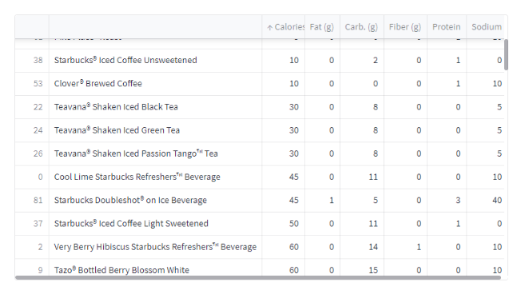

Solara (solara.dev) is a fresh and exciting web framework that enables React-style state-handling while keeping UI (almost) as easy as Streamlit (streamlit.io). Further by design it seems to have a bigger industrial potential than Streamlit.
In this post I’ll introduce Solara and compare it to the more well known Streamlit that can be used to build web apps and interactive Data Dashboards.
Solara and Streamlit are web frameworks which makes it very easy to write a full-stack app that can be everything from a small Proof-of-Concept to a big complicated Data Dashboard. There exist other competitors such as Dash, Panel and Voila which we’ll not include in-depth as comparison between those and Streamlit has been done previously.
I’m very excited to see where Solara ends up in the future. I believe it has a bright future ahead. During my initial tests it seems like a solid framework, there’s still some rough edges to fix but all in all it’s really good!
Here’s my quick introduction and comparison with Streamlit!
Streamlit and why it’s awesome
I’m a huge Streamlit fan. There’s a lot to love, the first time I tried it everything clicked. It’s simple and good looking, the User Experience (UX) and Developer Experience (DX) is exceptional. Using it I can easily build beautiful web apps in no time, efficient Data Dashboards and small Proof-of-Concepts (PoC).
With that said everything has a drawback, and Streamlit’s is performance once it scales to large. Streamlit works by rerunning everything in the script top-down once a change happens in the web app. This makes it incredibly simple to reason about and reduces the number of bugs, but it also builds what can become a huge bottleneck and slow down the app.
Streamlit solves this by introducing cache which allows reusing results from expensive computations and in the UI they reuse components to make the flow smother if nothing changes, this is done using the internal state. Once you start modifying state and cache the complexity grows quickly and the app becomes much harder to reason about.
Streamlit could solve this by enabling better API’s which allows better “data-flow” choices, like the st.form enables non-recalculated views unless submitted.
For now though… Let’s try solara a new exciting framework which does exactly this, but without the same simplicity.
Solara Introduction
Solara is a similar framework to Streamlit, but rather than rerunning everything top-down every time it uses a reactive approach through reacton (github.com/widgetti/reacton) that is a pure Python port of React to ipywidgets.
This means that only components that are using the reactive variable is rerun, which is very exciting! The performance improvements becomes great at the cost of a more declarative state-handling.
In Streamlit state is handled for you, in Solara state is separated from the component, like react, which means you handle it explicitly and further reduce hidden magic that in the end sometimes leads to a fragile complex app as the app grows.
shiny.rstudio.com shares examples of how complex state-handling can become in streamlit. What cannot be shared easily is how badly this scales with app size and complexity. The global state can, and probably sometimes will, lead to hard-to-find bugs and a hard time to achieve high-performant apps.
An example app and deeper introduction can be found in a later section.
ü•äSolara versus Streamlit
In here I’ll compare Solara and Streamlit, for a more in-depth usage see later sections.
TL;DR
Code is on GitHub lundez/solara_app / Section 1, and I added suggested improvements via PR#180 and Issue#177 to Solara.
- Con: Higher learning curve (floor) as you handle state manually (no magic), but with better DX I see it beating Streamlit because of the higher ceiling that brings new possibilities.
- Pro: Bonus: we learn the React paradigm which is widely used in frontend! A win-win for developers.
- Pro: A better industrial thinking
- Con: UX is not as good as Streamlit.
- Pro: Embeddable in Notebooks making it simpler to go really fast.
- Pro: Access to all
ipywidgetswhich is an incredible ecosystem.
Additionally compared to another interesting framework like Panel it’s much simpler IMO.
Most certainly Solara has a bright future if the development and maintenance is kept up, with additional marketing it can become a great competitor in the space for Gradio, Streamlit and others.
Solara Introduction
All code is available on GitHub lundez/solara_app and Section 1.
A simple app
Using Solara to build a simple app is pretty clean, we can clearly see the react -hook being used for file which is cool!
The entry-point in Solara is defined as a component named Page. This is automatically picked up and rendered. To show in a notebook you simply use display(Page()).
import solara
import polars as pl
@solara.component
def Page():
file, set_file = solara.use_state(None)
solara.Markdown("# Solara Example App (Starbucks Data)")
solara.FileDrop(on_file=set_file, lazy=False)
if file is not None:
df = pl.read_csv(file["data"], null_values="-").drop_nulls()
solara.DataFrame(df.to_pandas()) # currently does not support polars
else:
solara.Text("Make sure to upload a file")And run it through
solara run app.py
# use solara run --host localhost app.py on WSL until PR#180 or other is mergedQuite simple right? It‚Äôs incredibly similar to how you run Streamlit üòâ.
Working more with state
In the previous code we only used the state inside the same component, that’s all fine but it’s not a very good use-case.
Solara introduces 2 other types of state, reactive and use_reactive. Both very similar but use_reactive is only possible to use locally inside a component. The reactive function should only be used outside of components, for application wide state. If you use it inside a component it’ll be reset as the re-render happens, which is not what you’d expect.
As such we define a reactive variable sodium.
sodium = solara.reactive(0)further we bind this to a slider
solara.SliderInt(value=sodium)where it’ll automatically update whenever a user changes the slider.
We can then send this to a child-component which would be updated as well when it’s changed.
ChildPage(sodium)See lundez/solara_app to get a little more complex scenario.
And that’s my quick and dirty introduction to Solara!
Solara and Streamlit comparison
A comparison between the two is available in Section 1, where I use multiple components and share state between them. If you add some logging you can see that Solara doesn’t rerun code unnecessarily.
Quick Facts
| Measurement | Solara | Streamlit |
| #lines of code (LOC) | 53 | 49 |
| Simplicity (0-5) | 3 | 4 |
| Performance (0-5) | 4 | 3 |
| UX (0-5) - images in Section 0.3.2.3 | 3 | 5 |
Streamlit wins most, but with the performance and possibilities of Solara I still see it as a very capable contender. With, hopefully soon, improved UX and DX solara can grow to be really big!
In the TL;DR section you can see some other niceties of Solara such as Testing, Embeddability and more!
Deeper Comparison
State and ‘pythonicism’
The React paradigm, while cool, is certainly not pythonic at all! I believe that the initial “PoC”-stage implementation should be simpler to get started with. To “turn the knobs” and squeeze performance as is possible is great and should certainly be available for the more performance intense sections.
The positive of all this is that we learn the “React-paradigm” and we handle state explicitly, i.e. no Streamlit magic!
It’s a tie.
Embeddability
The embedability of Solara is a clear winner, being able to include it in our FastAPI backend or building an app initially directly in a Jupyter Notebook is insanely good.
Solara wins.
Components & UX
Streamlits components are better and more beautiful but Solara is not far behind, and with the possibility to use all components from ipywidget-ecosystem makes it incredibily powerful.
I see this as a huge boon.
Image Comparisons of Components


It’s a small win for Streamlit, Streamlit clearly wins the ‘simplicity’, ‘design’ and ‘clearness’ but Solara has a bonus for the amount of widgets available through ipywidgets ecosystem.
Readability
Because solara has less magic I believe Solara is easier to reason about in a complex app, but in the PoC’s and simple apps Streamlit is just as simple.
It’s a tie, but Solara wins as the app grows.
Outro
I believe that streamlit still is the best framework to get started with, but in 6 months from now on I can see solara as the better option.
If you’re developing a dashboard or app that needs high performance and industrial strength I can see solara as a better choice.
I’ll happily try to help Solara grow!
~Hampus Londögård
P.S. thanks to @maartenbreddels and @Gordon#1568 (Solara’s Discord) for all the help.
Appendix
I include full code here as well. These are taken from lundez/solara_app the 29/6 2023.
Solara App
Run using solara run <filename>.
from dataclasses import dataclass
import solara
import polars as pl
import solara.express as px
@solara.component
def Page():
file, set_file = solara.use_state(None)
solara.Markdown("# Solara Example App (Starbucks Data)")
solara.FileDrop(on_file=set_file, lazy=False)
if file is not None:
df = pl.read_csv(file["data"], null_values="-").drop_nulls()
DFViews(df)
else:
solara.Text("Make sure to upload a file")
@dataclass
class FilterValues:
sodium: tuple[int, int]
carb: tuple[int, int]
@solara.component
def Filters(df: pl.DataFrame, filters: solara.Reactive[FilterValues]):
with solara.Card("Filter DataFrame"):
carbs = solara.use_reactive((df["Carb. (g)"].min(), df["Carb. (g)"].max()))
sodium = solara.use_reactive((df["Sodium"].min(), df["Sodium"].max()))
solara.SliderRangeInt("Carbs (g)", value=carbs, min=df["Carb. (g)"].min(), max=df["Carb. (g)"].max())
solara.SliderRangeInt("Sodium", value=sodium, min=df["Sodium"].min(), max=df["Sodium"].max())
with solara.CardActions():
solara.Button("Submit", on_click=lambda: filters.set(FilterValues(sodium.value, carbs.value)))
@solara.component
def FilteredPage(df: pl.DataFrame, filter_values: solara.Reactive[FilterValues]):
df = df.filter(pl.col("Sodium").is_between(filter_values.value.sodium[0], filter_values.value.sodium[1]) &
pl.col("Carb. (g)").is_between(filter_values.value.carb[0], filter_values.value.carb[1]))
DFVis(df)
@solara.component
def DFVis(df: pl.DataFrame):
solara.Markdown(f"## DataFrame")
solara.DataFrame(df.to_pandas(), items_per_page=5)
px.histogram(df, x=["Carb. (g)", "Sodium"])
@solara.component
def DFViews(df: pl.DataFrame):
filter_values = solara.use_reactive(FilterValues((df["Carb. (g)"].min(), df["Carb. (g)"].max()), (df["Sodium"].min(), df["Sodium"].max())))
Filters(df, filter_values)
with solara.Columns():
DFVis(df)
FilteredPage(df, filter_values)Streamlit App
Run using streamlit run <filename>.
from dataclasses import dataclass
import streamlit as st
import polars as pl
import plotly.express as px
def Page():
st.markdown("# Streamlit Example App (Starbucks Data)")
file = st.file_uploader("Upload a file")
if file is not None:
df = pl.read_csv(file, null_values="-").drop_nulls()
DFViews(df)
else:
st.write("Make sure to upload a file")
@dataclass
class FilterValues:
sodium: tuple[int, int]
carb: tuple[int, int]
def Filters(df: pl.DataFrame) -> FilterValues:
with st.form("df_filer"):
st.write("**Filter DataFrame**")
carbs = (df["Carb. (g)"].min(), df["Carb. (g)"].max())
sodium = (df["Sodium"].min(), df["Sodium"].max())
carbs = st.slider("Carb. (g)", min_value=carbs[0], max_value=carbs[1], value=carbs)
sodium = st.slider("Sodium", min_value=sodium[0], max_value=sodium[1], value=sodium)
st.form_submit_button("Submit")
return FilterValues(sodium, carbs)
def FilteredPage(df: pl.DataFrame, filter_values: FilterValues):
df = df.filter(pl.col("Sodium").is_between(filter_values.sodium[0], filter_values.sodium[1]) &
pl.col("Carb. (g)").is_between(filter_values.carb[0], filter_values.carb[1]))
DFVis(df)
def DFVis(df: pl.DataFrame):
st.markdown(f"## DataFrame")
st.dataframe(df.to_pandas())
st.write(px.histogram(df, x=["Carb. (g)", "Sodium"]))
def DFViews(df: pl.DataFrame):
filters = Filters(df)
c1, c2 = st.columns(2)
with c1:
DFVis(df)
with c2:
FilteredPage(df, filters)
Page()